El senador socialista Bertrand Delanoe anunció su intención de aunar desde hoy a toda la izquierda en torno a su candidatura a la Alcaldía de París , tras ser respaldado anoche por los militantes de su partido.
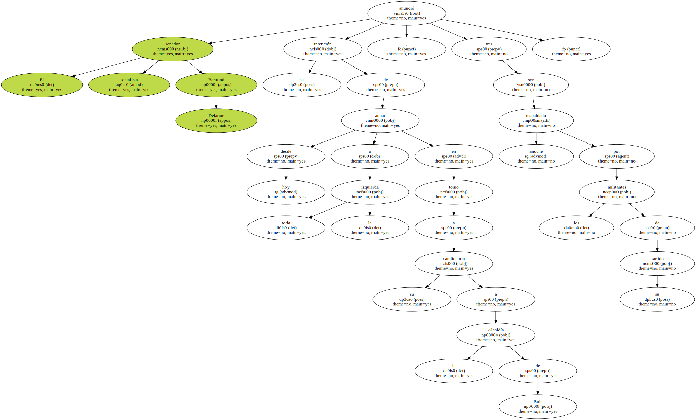Delanoe , de 49 años , consiguió 1.898 votos de los 2.285 emitidos por la militancia socialista , es decir , el 83,1 por ciento de los sufragios , según los datos definitivos anunciados hoy.
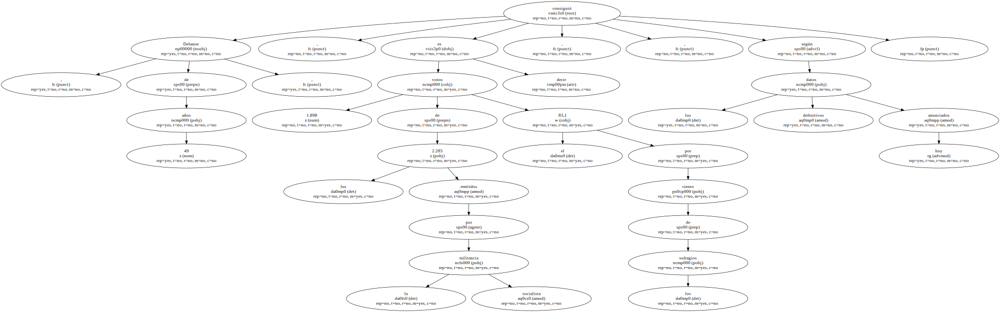El senador , quien festejó los resultados de la votación ante unos 500 simpatizantes socialistas en un restaurante abierto por un grupo de parados y decorado con materiales reciclados , dijo sentirse " orgulloso " del PS parisiense y abogó por la unión de todas las fuerzas de izquierda.
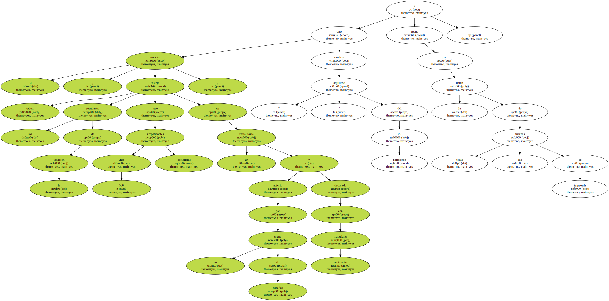En este sentido , aseguró que desde hoy propondrá " a las direcciones de los partidos políticos de la izquierda plural debatir sobre el futuro de los parisienses con los militantes Verdes , comunistas , Movimiento de los Ciudadanos y Radicales de Izquierda ".
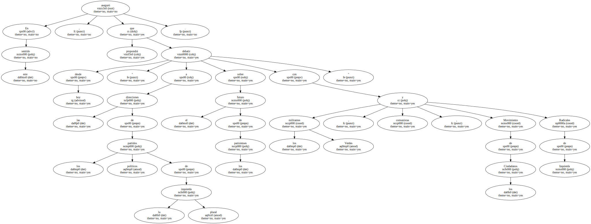Tras la retirada el pasado Lunes de Jack Lang , quien fue nombrado ministro de Educación , el presidente del grupo socialista en el Hotel de Ville ( sede del Ayuntamiento de París ) era el único candidato en liza para ser cabeza de lista del Partido Socialista ( PS ) en la capital francesa para las elecciones municipales del 2001.
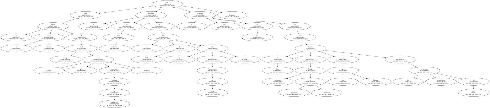Considerado próximo al primer ministro francés , Lionel Jospin , Delanoe cuenta en su haber con una experiencia de 23 años en la política municipal parisiense.

Mientras los socialistas aunaron anoche sus esfuerzos en un sólo candidato , en la acera de los neogaullistas del Reagrupamiento por la República ( RPR ) se cuentan ya tres políticos en liza.
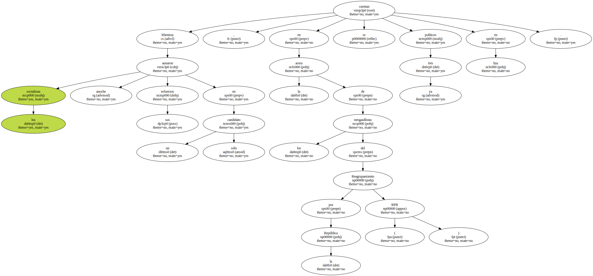El último en entrar en la carrera fue el ex líder del RPR Philippe Séguin , quien oficializó ayer su candidatura.
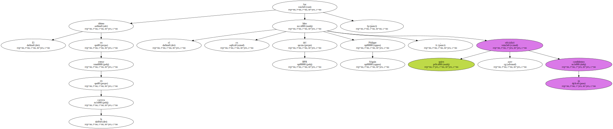Séguin , quien ha sido blanco reiterado de las iras del actual alcalde parisiense , el también neogaullista Jean Tiberi - candidato a su propia reelección - , rechazó anoche polemizar con su compañero de filas.
" Creo que en la vida política uno se degrada atacando a los otros porque eso significa que uno no tiene otra cosa que decir " , indicó Séguin.
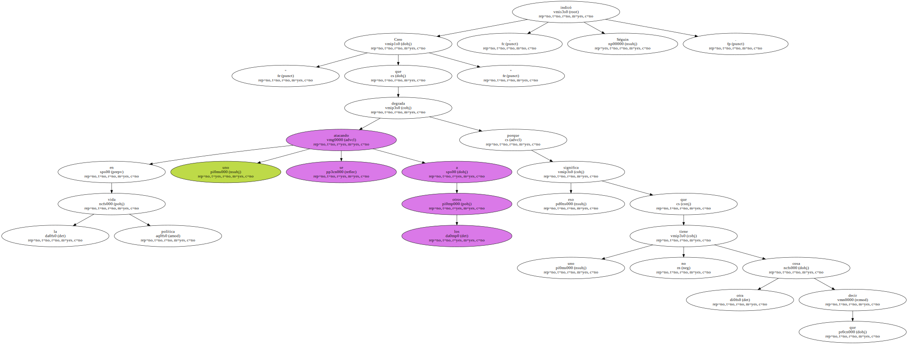Por su parte , la tercera neogaullista en liza , Francoise de Panafieu , quien definió a Tiberi como " una mezcla de valentía y fracaso " , se mostró convencida de que puede ganar , en una entrevista al diario " Le Parisien ".
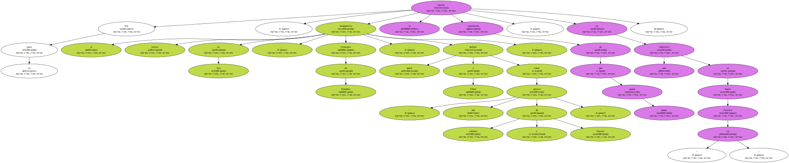Por último , tampoco se descarta que el ex primer ministro conservador Edouard Balladur salte a la arena de París de un momento a otro.
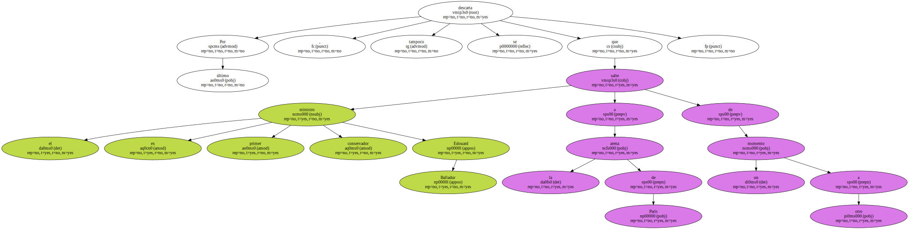Balladur , quien anoche presentó sus " ocho propuestas para París " en un acto público , respondió con un elocuente " cada uno a su ritmo " al ser animado por los presentes en la cena-debate a presentar su candidatura a la capital.
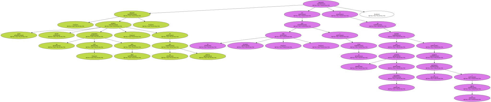El futuro de París pasa por una " elección de proyecto antes de por una elección de persona " , sentenció.
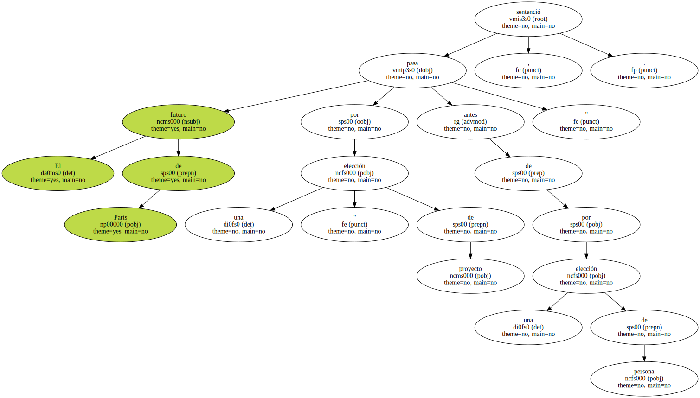